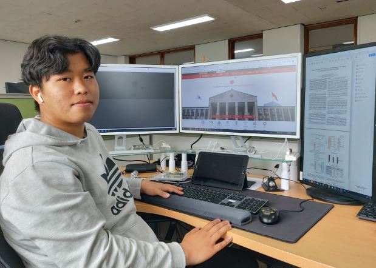

Myeongjin Kang (Integrated Ph.D. Student)
|  | Ph.D Candidate. |
Introduction
Full Bio Sketch
Mr. Kwon received his B.S. degree in Electronics Engineering at Kyungpook National University, Daegu, Republic of Korea in 2019. He is currently a integrated Ph.D. student in School of Electronics Engineering at Kyungpook National University, Daegu, Republic of Korea. His research interests include the behavior changeable neuromorphic deep learning processor based on partial software partial replacement and hardware reconfiguration architecture, especially designing ultra-low-power AI accelerator for resource-limited embedded systems. Currently, he is focusing on energy-efficient/fast/low-memory-cost binary firmware (FW) replacement via FW segmentation. He is the first student enrolled with B.S./M.S./Ph.D.-integrated course in KNU.
Research Topic
 A tiny processing unit (TPU) activated with insufficient power always has a problem with data protection. To solve this problem, many TPUs and embedded systems use error-correcting code (ECC), especially Hamming code. However, adding an ECC decoding block to the TPU can cause a bottleneck. Most TPUs that follow a Von Neumann structure spend large amounts of time in the instruction fetch stage. The instruction fetch time increases due to ECC decoding intensifying the bottleneck. In this research, we propose an architecture for a parallelized ECC decoding block. Although it increases memory usage, the parallelized ECC decoding block speeds up the entire TPU by more quickly processing the ECC decoding. This architecture was synthesized and validated with Design Compiler and showed successful performance improvements using proposed architecture.
A tiny processing unit (TPU) activated with insufficient power always has a problem with data protection. To solve this problem, many TPUs and embedded systems use error-correcting code (ECC), especially Hamming code. However, adding an ECC decoding block to the TPU can cause a bottleneck. Most TPUs that follow a Von Neumann structure spend large amounts of time in the instruction fetch stage. The instruction fetch time increases due to ECC decoding intensifying the bottleneck. In this research, we propose an architecture for a parallelized ECC decoding block. Although it increases memory usage, the parallelized ECC decoding block speeds up the entire TPU by more quickly processing the ECC decoding. This architecture was synthesized and validated with Design Compiler and showed successful performance improvements using proposed architecture.
Publications
Journal Publications
Conference Publications
Myungjin Kang and Daejin Park. Hue Based Effective Face Detection Using IoT Cooperation for Standby Power Reduction In The 5th International Conference on Next Generation Computing 2019 (ICNGC), 2019.
Myungjin Kang and Daejin Park. Robust On-Chip Processing Unit with Parallelized ECC Block for Lightweight Instruction Execution In 2020 IEEE International Conference on Consumer Electronics - Taiwan, 2020.
Participation in International Conference
IEEE COOLChips 2019, Yokohama, Japan
IEEE GCCE 2019, Osaka, Japan
ICNGC 2019, Chiang Mai, Thailand
ICEIC 2020, Barcelona, Spain